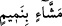

vurup, yakalar” diye cevap verir. İnsanları hoşlanmadıkları şekilde anan, onların
kusurlarını ortaya çıkaran, başkalarının bilmesini istemedikleri gizli noktalarını sır
duvarını kırarak ele alan bir kimseye -insanlara eziyet kamçısıyla vurmuş olacağı
düşüncesiyle- istiâre yoluyla “hemmâz” denmiştir.
Âyette yer alan “ /meşşâin bi nemîm” ifâdesi; insanlara zarar veren, onların
sözlerini birinden diğerine -aralarında bozgunculuk çıkarmak kasdıyla- koşarak
nakleden kimse demektir. Çünkü “nemîm ve nemîme” Arapçada koşma, insanların
sözlerini ispiyonculuk yaparak ortaya çıkarmak demektir. Bu fiil büyük günahlardandır.
Buna karşılık nasîhat amacıyla insanların sözlerini nakletmek günah olmadığı gibi tam
tersine vâciptir. Nitekim Mûsa (a.s.)’ın kavminden birisi âyetin diliyle şöyle der: “Ey
Mûsa! İleri gelenler seni öldürmek için hakkında müzâkere ediyorlar derhal
(buradan) çık. İnan ki ben senin iyiliğini isteyenlerdenim.” (el-Kasas, 28/20)
Târifat’ta “nemmâm” insanlarla konuşan, sonra onları kışkırtan, ortaya çıkarılmasını
istemedikleri şeyi söyleyip ortaya döken kimse demektir. Söylenen ve nakledilen bu
sözü ister hakkında konuşulan kişi, ister nakledilen kişi, isterse bir üçüncü kişi
sevmemiş olsun farketmez. Yine bu söz, ister ifâdeyle, ister işâretle, isterse bu ikisinin
dışında başka bir yolla ifâde edilmiş olsun farketmez. Bir hadis-i şerifte Peygamber
Efendimiz (s.a.) şöyle buyururlar: “Nemmâm cennete giremeyecektir.” [43] Burada
geçen “nemmâm” kelimesi, insanları ispiyon edip gammazlayan kimse demektir.
et-Te’vilâtü’n-necmiyye’de bu âyet-i kerîme şöyle tefsir olunuyor: “Meşşâin bi
nemîm” şu anlama gelir: Bu kimseler, ehl-i hakkın sözlerini bu şerefli insanlardan duyup
ezberlerler. Sonra bu sözleri hicâb ehli olan câhillerin yanında anlatıp ardından ehl-i
hakka gülerler. Üstelik naklettikleri bu sözlerin düşük ve alçak bir söz olduğunu iddiâ
ederler.
12. İyiliği hep engelleyen, mütecâviz, günaha dadanmış,
“ /Mennâ’” kelimesi “mâni’” kelimesinin mubalağalısıdır. Âyette yer alan “hayır”
/Mennâ’” kelimesi “mâni’” kelimesinin mubalağalısıdır. Âyette yer alan “hayır”
kelimesi mal anlamınadır. Buna göre “malı vermeyen, cimri olan kimse” denmiş
olmaktadır. Ya da “ /menna’in li’l-hayri” demek “insanların hayra ulaşmasına
engel olan” demektir. Bu durumda “hayır”dan maksad ise îman, itâat ve infak olur. İşârî
mânâda “hayrı engelleyen” demek, sülûk erbâbının, mürşidlerin irşâdını almalarına
engel olan kişi demektir. Âyette, kâfirlerin “neyi engelledikleri” zikredilirken “kimleri
engelledikleri” ifâde olunmuyor.
Velid b. Muğira’nın on oğlu vardı. Velid onlara ve yakın akrabalarına “sizden kim
Muhammed’in dinine uyacak olursa ben ona asla hiçbir yardımda bulunmayacağım”